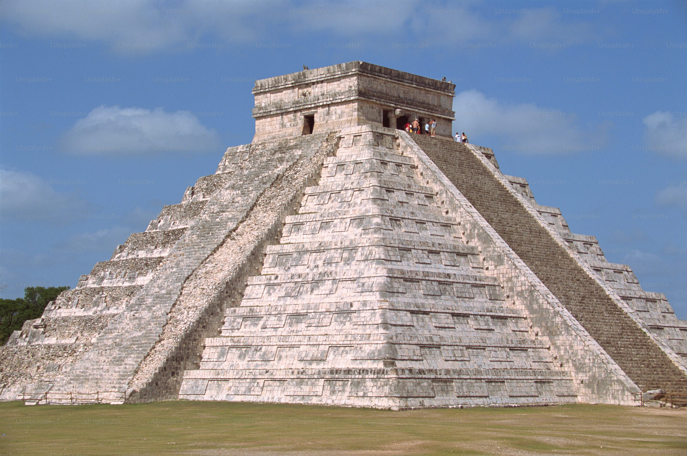

La historia mexicana abarca el ascenso y caída de grandes civilizaciones, la dramática colisión y fusión de las culturas española e indígena y una guerra revolucionaria que iba a cambiar el panorama político del país y renovar su sentido de la identidad cultural. Los olmecas establecieron su civilización allí hace unos 3.000 años. A través de los siglos, los imperios avanzados desarrollaron fascinantes tradiciones. En el siglo XVI la capital azteca, Tenochtitlán, era una ciudad-isla floreciente donde majestuosos templos se elevaban entre los jardines flotantes, concurridos mercados y extensos puentes. Al poco tiempo de su llegada, los conquistadores españoles destruyeron la mayor parte de la ciudad, preparando así las bases de lo que más adelante sería la actual Ciudad de México. México siguió siendo parte del imperio español durante tres siglos, hasta que alcanzó su independencia en 1810. En 1846, el país perdió casi la mitad de su territorio ante los EE.UU. como resultado de la Guerra mexicana-americana. En el siglo XX, las populares figuras de revolucionarios como Pancho Villa y Emiliano Zapata ayudaron a liderar una revolución que más tarde sería famosa y representada en muchos de los murales brillantes pintados por pintores mexicanos como Diego Rivera. Estos murales producidos durante el movimiento muralista mexicano celebran la cultura mexicana y cuentan la historia de México con detalles vívidos y expresivos.
